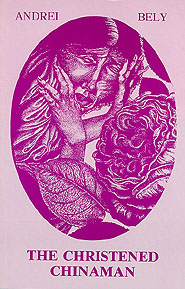

Page index / publications
The Christened Chinaman

The Christened ChinamanAndrei Bely
Translated, annotated and introduced by Thomas R. Beyer, Jr.
(Hermitage Publishers: 1991)
ISBN 1-55779-042-6
Bely's autobiographical novel describes family life and the academic circles of Moscow at the end of the nineteenth century. It captures the memory and imagination of a child in the sustained rhythmic prose of an adult Symbolist poet and theoretician. This translation seeks to convey accurately the complexity and special magic of Bely's ornamental prose.